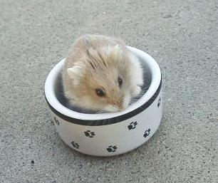
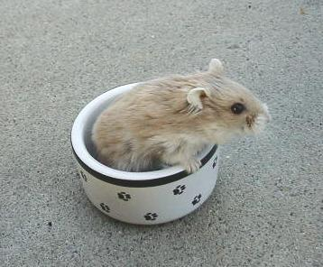
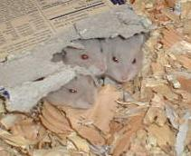
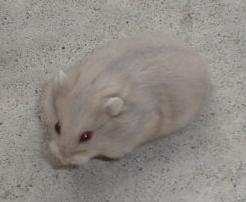
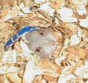

All blue fawns are agouti. Agouti hamsters have an off-white belly and scallops on their sides. Their hairs are actually banded which is most easily seen by the fact that each hair is a different color at the roots (undercoat) than on the tips.
| Blue Fawn Campbells Dwarf Hamsters | ||||||||||||||||
|  | ||||||||||||||||
|  | ||||||||||||||||
|  | ||||||||||||||||
|  | ||||||||||||||||
|  | ||||||||||||||||
| Blue fawn (ddpp) is the two-gene color which is the combination of the opal and argente genes. Since both of these colors are recessive, the hamster must have two copies of both of these genes to be a blue fawn. It is not difficult to breed blue fawns if you have both an opal and an argente hamster -- but you must have both genes. To get blue fawns, you would breed the opal to the argente. All babies would be normal carrying opal and argente. You would then breed two of these normals together. From this pairing, you should get approximately 9/16 normals, 3/16 opals, 3/16 argentes, and 1/16 blue fawns. (It is a bit trickier but still doable if you start with animals who only carry these genes.) All blue fawns are agouti. Agouti hamsters have an off-white belly and scallops on their sides. Their hairs are actually banded which is most easily seen by the fact that each hair is a different color at the roots (undercoat) than on the tips. |
||||||||||||||||